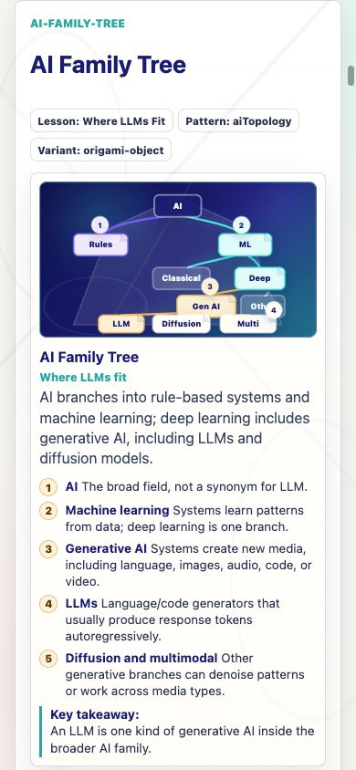
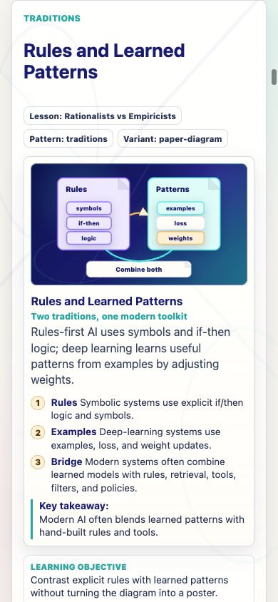
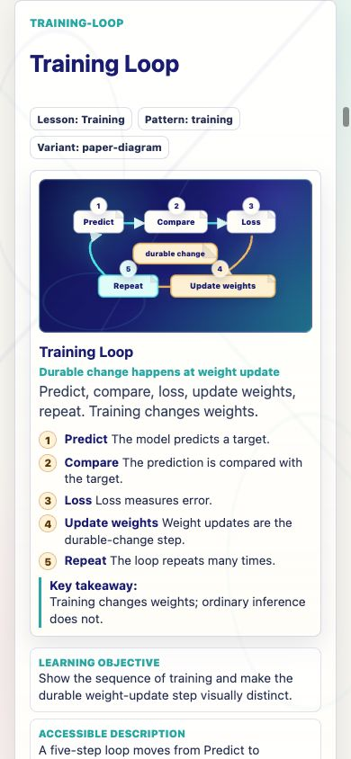
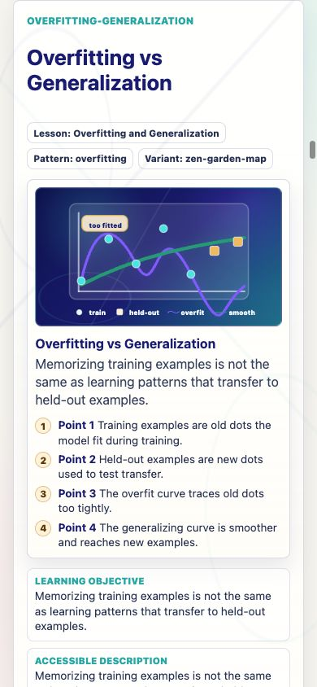
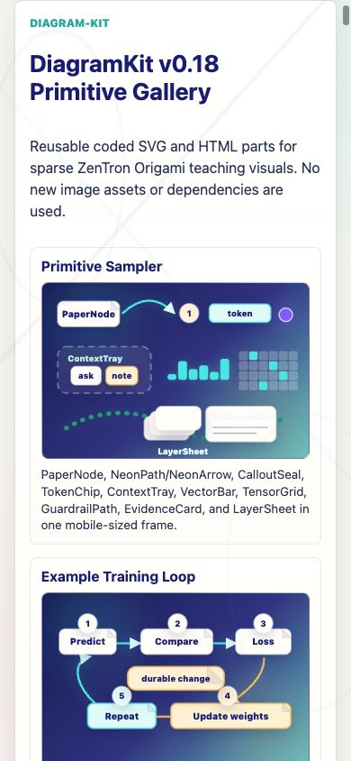
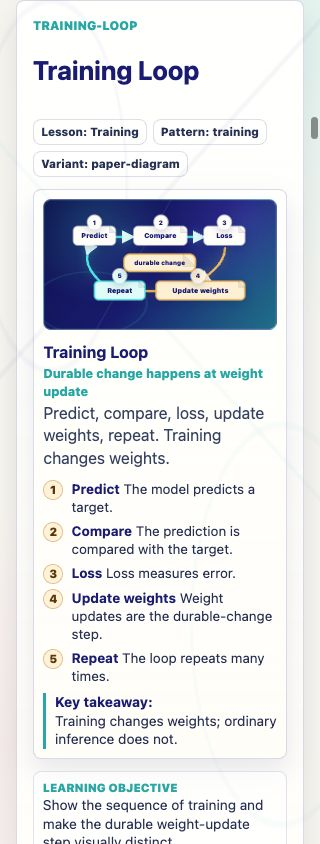
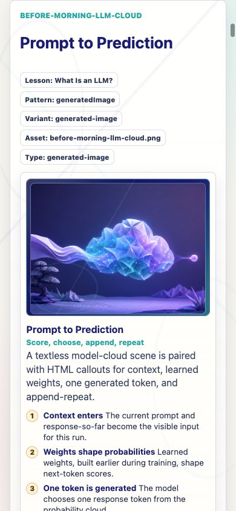

Prompt Life v0.18.0
DiagramKit + Illustration Clarity Foundation
Reusable coded diagram primitives, four Before Morning diagram refactors, review-gallery coverage, mobile screenshots, and verification results.
1. What Changed
- Added a local DiagramKit component module for reusable SVG/HTML teaching diagram primitives.
- Refactored four coded Before Morning visuals:
ai-family-tree,traditions,training-loop, andoverfitting-generalization. - Added a DiagramKit primitive gallery to
/review/visual-aids. - Bumped the visible app version to
0.18.0. - Added visual grammar, refactor audit, tiny-interaction triage, review notes, screenshots, and this PDF report.
2. Files Changed
src/components/DiagramKit.tsxsrc/components/VisualAids.tsxsrc/styles/global.csssrc/main.tsxdocs/design/DIAGRAM_KIT_V0_18.mddocs/curriculum/TINY_INTERACTION_TRIAGE_V0_18.mddocs/stage-audits/v0-17-before-morning/DIAGRAM_KIT_REFACTOR_V0_18.mddocs/REVIEW_NOTES.mddocs/stage-audits/v0-17-before-morning/screenshot-index.mddocs/stage-audits/v0-17-before-morning/screenshots/v0-18-*.png
3. Library / Dependency Decisions
No new dependencies were added. The visuals use local React/SVG primitives rather than D3, icon packages, generated PNGs, or 3D libraries because the required diagrams are sparse, mobile-first teaching scenes.
4. DiagramKit Components Created
DiagramFrame, DiagramScene, PaperNode, PaperPanel, NeonPath, NeonArrow, CalloutSeal, TokenChip, ContextTray, VectorBar, ProbabilityBar, LayerSheet, TensorGrid, EvidenceCard, GuardrailPath, WarningZone, GlowNode, LegendRow, DiagramCaption, and DiagramCallouts.
5. Visuals Refactored
| Visual | Behavior |
|---|---|
| Where LLMs Fit | Folded AI family tree with short category labels and HTML callouts for the details. |
| Rationalists vs Empiricists | Two paper panels plus a bridge showing rules-first and learned-pattern systems can combine. |
| Training | Five-step loop with Update weights highlighted as the durable-change step. |
| Overfitting and Generalization | Readable plot with training dots, held-out examples, overfit curve, smoother curve, and compact legend. |
6. Tiny Interaction Triage
The pass intentionally did not tune interaction mechanics. The triage recommends future focused work on Training, Rationalists vs Empiricists, and Overfitting while preserving answer randomization, progress storage, non-competitive tone, and the single badge model.
7. Build / Typecheck / Audit Result
npm run typecheck: passed.npm run build: passed with the existing Vite large-chunk warning.npm run build:pages: passed with the existing Vite large-chunk warning.npm run audit:answers: passed; 68 surfaces, 46 randomized, 22 fixed-order exclusions.- Browser QA at 390px and 320px: screenshots captured; no console errors found.
- Smoke checks: main app, lesson review route, visual-aid review route, and Badge version render correctly.
8. Bundle-Size Impact
| Asset | Baseline | v0.18 | Approx. change |
|---|---|---|---|
| CSS raw | 68.76 kB | 73.47 kB | +4.71 kB |
| CSS gzip | 15.00 kB | 15.97 kB | +0.97 kB |
| JS raw | 630.81 kB | 638.93 kB | +8.12 kB |
| JS gzip | 170.95 kB | 173.88 kB | +2.93 kB |
9. Known Issues
- The existing Vite large-chunk warning remains.
- DiagramKit is a focused teaching-diagram toolkit, not a general charting library.
- Generated Image 2 assets should later be reviewed against this visual grammar so coded and image-backed visuals continue to feel related.
10. Next Three Recommended Steps
- Generate the next Before Morning Image 2 asset only after confirming which remaining coded visuals should stay coded.
- Run a small tiny-interaction clarity pass on Training, Traditions, and Overfitting.
- Plan app-level code splitting to retire the persistent Vite large-chunk warning.
Image 2 readiness: Before Morning is ready for Image 2 asset generation from a visual-system standpoint.
Screenshots






